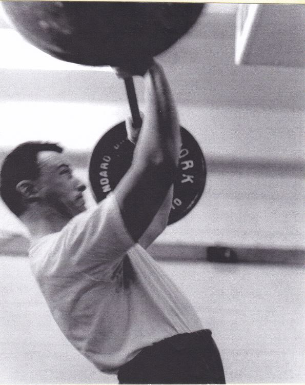

Weightlifting
Dad had a great respect for exercise and helped mold me with the same attitude.
- Dad was first introduced to weightlifting by his own father, who served in WW1 as Lieutenant in the Royal Tanks Corp.
- That interest grew into a passion that intersected with mathematics in his most significant contribution to weightlifting, the "Sinclair Bodyweight Formula".
- In the Olympics and other weightlifting competitions, athletes compete against others within their own bodyweight category. Whereas, the Sinclair Total is a formula to compare athlete to athlete at any bodyweight.
- The Sinclair Formula answered the question: “What would an athlete weighing x kg and lifting y kg, lift if they were a superheavyweight lifter of the same ability?”
- His Formula was adopted by the International Weightlifting Federation in 1979 and used world-wide.
- In competitions athletes attempt to lift the maximum weight possible for them using 2 techniques: Snatch, and Clean & Jerk. The athlete is allowed 3 attempts each per technique. The combined weight of each technique is their Lifted weight total. The Snatch has the athlete lift the barbell from the floor to overhead in a single explosive movement. Whereas, the Clean & Jerk combines 2 motions: starting with lifting the barbell from the floor to shoulders, and following with jerking the weight to overhead. One can typically lift about 20% more using the Clean & Jerk. Medals are presented for both lifts and their total.
- Below is a picture of Dad weightlifting - brains and brawn! 
- He had been involved with the Alberta Provincial Weightlifting Federation for over 50 years, officiated at the first competition in 1958, and had served as president.
- He also was recruited to the Canadian Weightlifting Federation Officials committee.
- He was the first Canadian to become an International Weightlifting Federation #3 official, and the first to reach #1 official certification which qualified him for Olympic judging.
Mattie Rogers lifting using Clean & Jerk technique, courtesy of YouTube.
Full YouTube Video